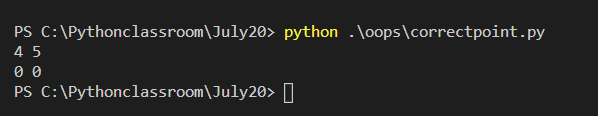
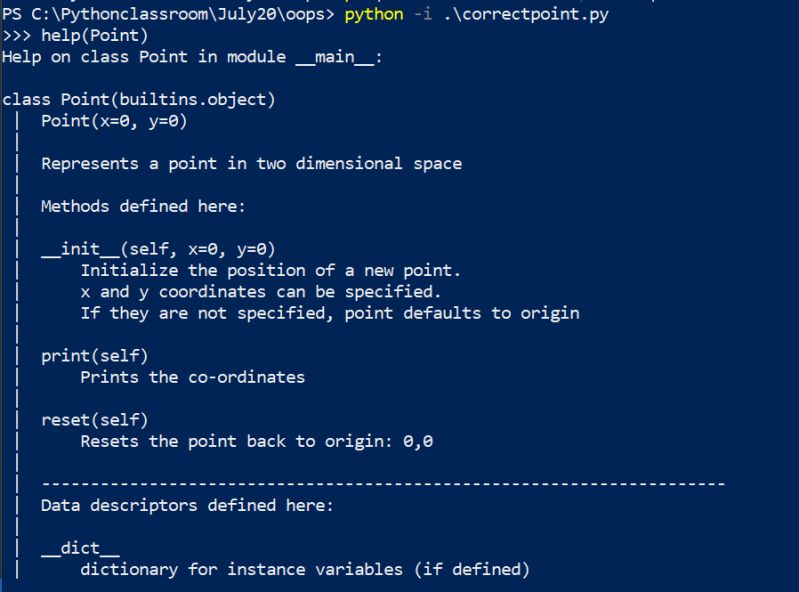

20 Objects and Classes Part 2
Initializing the object
- Lets look at Point class which we have written so far
class Point: def reset(self): self.x = 0 self.y = 0 - If we don’t explicitly set x and y positions on Our point object, we have a broken point with not real positions, So better idea would be enforcing user to pass the values of x and y while instantiating object from class
- So in many object oriented languages we have a concept of constructor which is a special method that creates and initializes the object
- In Python we have a constructor & a initializer. We rarely use constructor and often use initializer
- In python whenever you come across methods with
__method_name__, these methods are known as magic methods or dunder (double underscore) - Python initialization method is also a magic method and it has a name
__init__ - Lets use initialization in the Point code
class Point:
def __init__(self, x, y):
self.x = x
self.y = y
def reset(self):
self.x = 0
self.y = 0
def print(self):
print(self.x, self.y)
# To instantiate an object
p = Point(4,5)
p.print()
p.reset()
p.print()

-
Even if the user doesn’t pass x,y values i want to set some default values ```python class Point: def init(self, x=0, y=0): self.x = x self.y = y
def reset(self): self.x = 0 self.y = 0
def print(self): print(self.x, self.y)
To instantiate an object
p = Point(4,5) p.print() p.reset() p.print()
Lets instantiate a new object with default arguments
print(“printing default arguments based object”) new_point = Point() new_point.print()

* In initialization after the object is created __init__ will be called to initialize the values
* Constructor in the case of the python is ```__new__```
### Explaining Classes
* Python supports writing documentation of your classes & methods using __docstrings__.
* Lets look at our program
```python
class Point:
"Represents a point in two dimensional space"
def __init__(self, x=0, y=0):
""" Initialize the position of a new point.
x and y coordinates can be specified.
If they are not specified, point defaults to origin
"""
self.x = x
self.y = y
def reset(self):
"""
Resets the point back to origin: 0,0
"""
self.x = 0
self.y = 0
def print(self):
"""
Prints the co-ordinates
"""
print(self.x, self.y)
- Now importing this code in the Python interactive shell and we can view the help of the class.

- There are document generators in Python which can create a html documentation of your classes when you write doc strings.
- Refer Here for official docstring documentation.
- Now lets debug our class in visual studio code. While debugging the classes we will use Step into which will help in moving into functions/operations/behaviors while debugging
- Exercise: Create a class called as Number which will have operations such as
- is_even
- is_prime
- is_palindrome
class Number: """ This represents a number which has some operations for mathematical convenience """ def __init__(self, number=0): """ Initializes number with value passed otherwise initializes to zero """ pass def is_even(self): """ This operation returns true if the number is even, false other wise """ pass def is_prime(self): """ This operation returns true if the number is prime, false other wise """ pass def is_palindrome(self): """ This operation returns true if the number is palindrome, false other wise """ pass